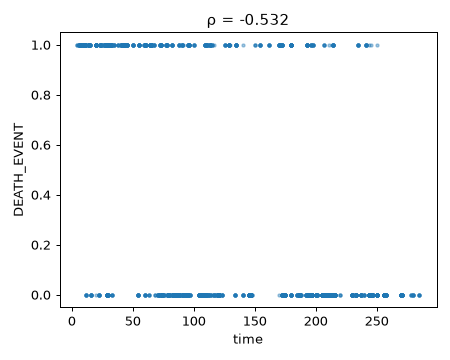
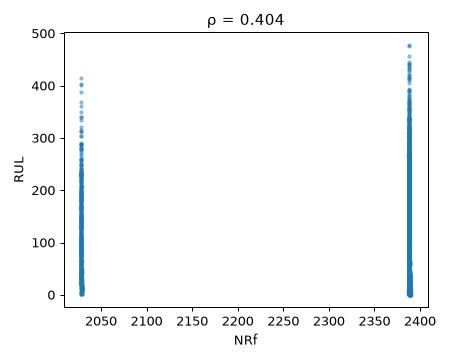

Sujets › Détection d'anomalies et pannes
Question : Les anomalies et pannes sont-elles annoncées par des signaux précurseurs, et quels capteurs les trahissent en premier ?
2026-11-05 à 03:39 · 4 datasets analysés · interprété par gemini-3.5-flash-lite
Méthode : chaque dataset est coupé en deux moitiés fixes. Les découvertes sont cherchées sur la 1re moitié puis revérifiées sur la 2e (✔ confirmé / ✘ non confirmé) ; les hypothèses sont testées uniquement sur la 2e moitié.
Proposées par le LLM lors d'un run précédent, testées ici par la Raspberry.
Jitter.PPQ5 · y = DFA · groupe = sexCe qui est testé exactement : Le lien entre Jitter.PPQ5 et DFA change-t-il selon sex, et est-il plus fort pour sex = 1 ?
Dans parkinsons-telemonitoring, la corrélation Jitter.PPQ5~DFA vaut +0.30 pour « sex = 1 » contre +0.56 pour « sex = 0 » (p = 7.3e-16) : effet INVERSE de celui prédit. Attention : relation non linéaire ou valeurs extrêmes dans « sex = 1 » (Spearman ≠ Pearson) ; un modèle non linéaire (GAM, splines, log) serait plus adapté. [Testé sur : moitié de confirmation (2964 lignes jamais vues à l'exploration)]
Littérature : La littérature documente largement les différences liées au sexe dans les mesures acoustiques vocales de la maladie de Parkinson.
Hypothèse du sujet Ce que dit la voix, testée pendant ce run.
f_14_median_pitch · y = f_18_max_pitch · groupe = f_24_number_of_voice_breaks · seuil = 2.0Ce qui est testé exactement : Le lien entre f_14_median_pitch et f_18_max_pitch change-t-il selon f_24_number_of_voice_breaks (coupé à 2), et est-il plus fort au dessus du seuil ?
Dans BenchmarkDatasets/Parkinson_Speech, la corrélation f_14_median_pitch~f_18_max_pitch vaut +0.19 pour « f_24_number_of_voice_breaks > 2 » contre +0.71 pour « f_24_number_of_voice_breaks ≤ 2 » (p = 4.3e-05) : effet INVERSE de celui prédit. Attention : relation non linéaire ou valeurs extrêmes dans « f_24_number_of_voice_breaks ≤ 2 » (Spearman ≠ Pearson) ; un modèle non linéaire (GAM, splines, log) serait plus adapté. [Testé sur : moitié de confirmation (366 lignes jamais vues à l'exploration)]
Littérature : L'effet des ruptures de voix sur la hauteur tonale (pitch) est un marqueur classique de la dysphonie parkinsonienne.
Hypothèse du sujet Ce que dit la voix, testée pendant ce run.
PPE · y = motor_UPDRS · seuil = 0.2Ce qui est testé exactement : Le lien entre PPE et motor_UPDRS est-il plus fort au-dessus de PPE = 0.2 ?
Dans parkinsons-telemonitoring, la corrélation PPE~motor_UPDRS vaut +0.14 pour « PPE > 0.2 » contre +0.04 pour « PPE ≤ 0.2 » (p = 0.0061). [Testé sur : moitié de confirmation (2964 lignes jamais vues à l'exploration)]
Littérature : Le seuillage spécifique de l'indice PPE pour l'évaluation des symptômes moteurs nécessite encore des validations cliniques approfondies.
Hypothèse du sujet Ce que dit la voix, testée pendant ce run.
f_0_jitter_local · y = f_16_std_pitch · groupe = f_23_fraction_locally_unvoiced_frames · seuil = 0.05Ce qui est testé exactement : Le lien entre f_0_jitter_local et f_16_std_pitch change-t-il selon f_23_fraction_locally_unvoiced_frames (coupé à 0.05), et est-il plus fort au dessus du seuil ?
Dans BenchmarkDatasets/Parkinson_Speech, la corrélation f_0_jitter_local~f_16_std_pitch vaut +0.35 pour « f_23_fraction_locally_unvoiced_frames > 0.05 » contre +0.35 pour « f_23_fraction_locally_unvoiced_frames ≤ 0.05 » (p = 0.98). [Testé sur : moitié de confirmation (366 lignes jamais vues à l'exploration)]
Littérature : Les relations entre le jitter et l'écart-type du pitch sont des notions fondamentales du traitement du signal vocal.
Hypothèse du sujet Ce que dit la voix, testée pendant ce run.
NRf · y = Ps30 · groupe = setting_1Ce qui est testé exactement : Le lien entre NRf et Ps30 change-t-il selon setting_1, et est-il plus fort au dessus du seuil ?
ejection_fraction · y = serum_creatinine · groupe = diabetesCe qui est testé exactement : Le lien entre ejection_fraction et serum_creatinine change-t-il selon diabetes ?
cycle · y = T50 · seuil = 150Ce qui est testé exactement : Le lien entre cycle et T50 est-il différent de cycle = 150 ?
signal -> sexIl y a une fuite de données ou un surapprentissage massif (balanced accuracy de 0.97 pour prédire le sexe à partir de variables cliniques), ce qui indique un artéfact méthodologique.
balanced_accuracy = 0.972, hasard = 0.5, validation = aléatoire, n = 2482, variables_les_plus_informatives = platelets, creatinine_phosphokinase, time, smoking, confirmation = confirmé — balanced_accuracy = 0.97 sur d'autres personnes / lignes (hasard 0.50) · score 0.97
signal -> agePrédire l'âge avec un R² de 0.89 à partir de variables cliniques courantes suggère une fuite d'information ou un encodage circulaire dans le dataset.
r2 = 0.886, hasard = 0.0, validation = aléatoire, n = 2482, variables_les_plus_informatives = creatinine_phosphokinase, time, platelets, serum_creatinine, confirmation = confirmé — r2 = 0.89 sur d'autres personnes / lignes (hasard 0.00) · score 0.94
NRf ~ RULLa vitesse corrigée du fan (NRf) montre une relation monotone non linéaire avec la durée de vie restante (RUL), ce qui en fait un précurseur pertinent d'usure.
spearman = -0.406, pearson = -0.002, n = 20000, confirmation = confirmé — ρ = -0.39 sur 20000 lignes (découverte : -0.41) · score 0.90
cycle ~ NRfLe lien entre le cycle de vol et NRf reflète simplement l'évolution mécanique standard au cours du temps d'utilisation.
spearman = 0.382, pearson = -0.0, n = 20000, confirmation = confirmé — ρ = +0.37 sur 20000 lignes (découverte : +0.38) · score 0.88
setting_1 ~ Nf_dmdLe lien entre setting_1 et Nf_dmd est mécanique, piloté directement par la commande de consigne du système.
spearman = -0.741, pearson = -0.443, n = 20000, confirmation = confirmé — ρ = -0.74 sur 20000 lignes (découverte : -0.74) · score 0.80
setting_1 ~ NfLe lien entre setting_1 et Nf découle directement de la consigne de vitesse imposée au moteur.
spearman = -0.729, pearson = -0.444, n = 20000, confirmation = confirmé — ρ = -0.73 sur 20000 lignes (découverte : -0.73) · score 0.79
T50 ~ Ps30La forte corrélation entre T50 (température en sortie de turbine) et Ps30 (pression en sortie de compresseur) relève de la thermodynamique classique des turboréacteurs.
spearman = 0.979, pearson = 0.937, n = 20000, q = 0.0, confirmation = confirmé — ρ = +0.98 sur 20000 lignes (découverte : +0.98) · score 0.78
T24 ~ NfLa corrélation entre T24 (température en entrée de compresseur basse pression) et Nf (vitesse du fan) est une relation physique directe.
spearman = 0.976, pearson = 0.811, n = 20000, q = 0.0, confirmation = confirmé — ρ = +0.97 sur 20000 lignes (découverte : +0.98) · score 0.78
Nc ~ htBleedLa forte corrélation entre Nc (vitesse du compresseur haute pression) et htBleed (prélèvement d'air) est une conséquence directe de la conception du système pneumatique.
spearman = 0.976, pearson = 0.998, n = 20000, q = 0.0, confirmation = confirmé — ρ = +0.97 sur 20000 lignes (découverte : +0.98) · score 0.78
T30 ~ NcLa corrélation entre T30 (température en sortie de compresseur) et Nc (vitesse HP) est purement mécanique et thermique.
spearman = 0.974, pearson = 0.998, n = 20000, q = 0.0, confirmation = confirmé — ρ = +0.97 sur 20000 lignes (découverte : +0.97) · score 0.78
time ~ DEATH_EVENTLe temps de suivi est fortement corrélé à l'événement de mortalité, confirmant l'importance de la censure et du suivi longitudinal dans la prédiction de survie.
spearman = -0.532, pearson = -0.517, n = 2482, q = 1.1e-179, confirmation = confirmé — ρ = -0.56 sur 2518 lignes (découverte : -0.53) · score 0.43
sex ~ smokingLa corrélation statistique entre le sexe et le tabagisme reflète simplement des données démographiques observées dans la cohorte.
spearman = 0.434, pearson = 0.434, n = 2482, q = 4.1e-113, confirmation = confirmé — ρ = +0.43 sur 2518 lignes (découverte : +0.43) · score 0.35
ejection_fraction ~ DEATH_EVENTLa fraction d'éjection est fortement associée à la survenue de l'événement fatal, validant son rôle de marqueur clinique critique.
cramers_v = 0.479, p = 2.9e-113, confirmation = confirmé — V = 0.47 (découverte : 0.48) · score 0.34
sex ~ smokingAssociation sociodémographique classique entre le sexe et le tabagisme dans cette population spécifique.
cramers_v = 0.429, p = 4.8e-103, confirmation = confirmé — V = 0.44 (découverte : 0.43) · score 0.30
anomalies ~ serum_creatinine, creatinine_phosphokinase, DEATH_EVENTRésultat descriptif identifiant les variables qui caractérisent le profil des anomalies de manière attendue.
n_anomalies = 50, sur = 2482, variables_qui_les_distinguent = serum_creatinine (3.8 σ), creatinine_phosphokinase (2.1 σ), DEATH_EVENT (1.4 σ), confirmation = non applicable — résultat descriptif · score 0.30
Description: The "heart_failure_clinical_records.csv" dataset comprises clinical records of patients with heart failure, detailing various medical attributes that may contribute to heart failure incidents. This dataset is instrumental for researchers and healthcare professionals aiming to analyze fa
ejection_fraction ~ DEATH_EVENT cramers_v = 0.479, p = 2.9e-113, confirmation = confirmé — V = 0.47 (découverte : 0.48)sex ~ smoking cramers_v = 0.429, p = 4.8e-103, confirmation = confirmé — V = 0.44 (découverte : 0.43)Description: This dataset, named "heart_failure_clinical_records.csv", consists of clinical records of patients with heart failure. It includes various attributes such as age, anaemia, creatinine phosphokinase levels, diabetes status, ejection fraction, high blood pressure presence, platelet count,

signal -> sex balanced_accuracy = 0.972, hasard = 0.5, validation = aléatoire, n = 2482, variables_les_plus_informatives = platelets, creatinine_phosphokinase, time, smoking, confirmation = confirmé — balanced_accuracy = 0.97 sur d'autres personnes / lignes (hasard 0.50)signal -> age r2 = 0.886, hasard = 0.0, validation = aléatoire, n = 2482, variables_les_plus_informatives = creatinine_phosphokinase, time, platelets, serum_creatinine, confirmation = confirmé — r2 = 0.89 sur d'autres personnes / lignes (hasard 0.00)time ~ DEATH_EVENT spearman = -0.532, pearson = -0.517, n = 2482, q = 1.1e-179, confirmation = confirmé — ρ = -0.56 sur 2518 lignes (découverte : -0.53)sex ~ smoking spearman = 0.434, pearson = 0.434, n = 2482, q = 4.1e-113, confirmation = confirmé — ρ = +0.43 sur 2518 lignes (découverte : +0.43)anomalies ~ serum_creatinine, creatinine_phosphokinase, DEATH_EVENT n_anomalies = 50, sur = 2482, variables_qui_les_distinguent = serum_creatinine (3.8 σ), creatinine_phosphokinase (2.1 σ), DEATH_EVENT (1.4 σ), confirmation = non applicable — résultat descriptif<p align="center" ---------------------------------------------------------------------------------------------------------------------------------------------------- </p <p align="center" <b <span style="color: 2563eb;" Remaining useful life prediction</span <span style="color: 16a34a

NRf ~ RUL spearman = -0.406, pearson = -0.002, n = 20000, confirmation = confirmé — ρ = -0.39 sur 20000 lignes (découverte : -0.41)cycle ~ NRf spearman = 0.382, pearson = -0.0, n = 20000, confirmation = confirmé — ρ = +0.37 sur 20000 lignes (découverte : +0.38)setting_1 ~ Nf_dmd spearman = -0.741, pearson = -0.443, n = 20000, confirmation = confirmé — ρ = -0.74 sur 20000 lignes (découverte : -0.74)setting_1 ~ Nf spearman = -0.729, pearson = -0.444, n = 20000, confirmation = confirmé — ρ = -0.73 sur 20000 lignes (découverte : -0.73)T50 ~ Ps30 spearman = 0.979, pearson = 0.937, n = 20000, q = 0.0, confirmation = confirmé — ρ = +0.98 sur 20000 lignes (découverte : +0.98)T24 ~ Nf spearman = 0.976, pearson = 0.811, n = 20000, q = 0.0, confirmation = confirmé — ρ = +0.97 sur 20000 lignes (découverte : +0.98)Nc ~ htBleed spearman = 0.976, pearson = 0.998, n = 20000, q = 0.0, confirmation = confirmé — ρ = +0.97 sur 20000 lignes (découverte : +0.98)T30 ~ Nc spearman = 0.974, pearson = 0.998, n = 20000, q = 0.0, confirmation = confirmé — ρ = +0.97 sur 20000 lignes (découverte : +0.97)T50 ~ htBleed spearman = 0.972, pearson = 0.99, n = 20000, q = 0.0, confirmation = confirmé — ρ = +0.97 sur 20000 lignes (découverte : +0.97)T30 ~ T50 spearman = 0.971, pearson = 0.99, n = 20000, q = 0.0, confirmation = confirmé — ρ = +0.97 sur 20000 lignes (découverte : +0.97)setting_1 ~ P15 spearman = -0.97, pearson = -0.976, n = 20000, q = 0.0, confirmation = confirmé — ρ = -0.97 sur 20000 lignes (découverte : -0.97)Nc ~ epr spearman = 0.968, pearson = 0.931, n = 20000, q = 0.0, confirmation = confirmé — ρ = +0.97 sur 20000 lignes (découverte : +0.97)epr ~ BPR spearman = -0.966, pearson = -0.852, n = 20000, q = 0.0, confirmation = confirmé — ρ = -0.97 sur 20000 lignes (découverte : -0.97)T50 ~ Nc spearman = 0.961, pearson = 0.988, n = 20000, q = 0.0, confirmation = confirmé — ρ = +0.96 sur 20000 lignes (découverte : +0.96)T2 ~ P2 spearman = 0.958, pearson = 0.986, n = 20000, q = 0.0, confirmation = confirmé — ρ = +0.96 sur 20000 lignes (découverte : +0.96)